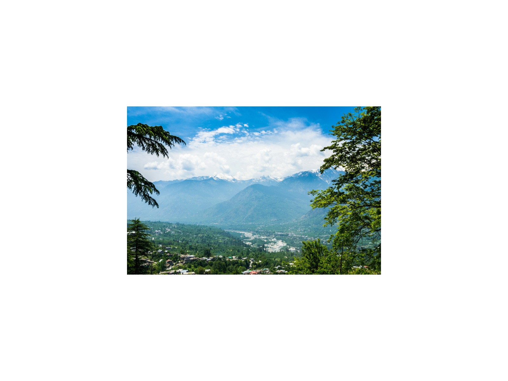
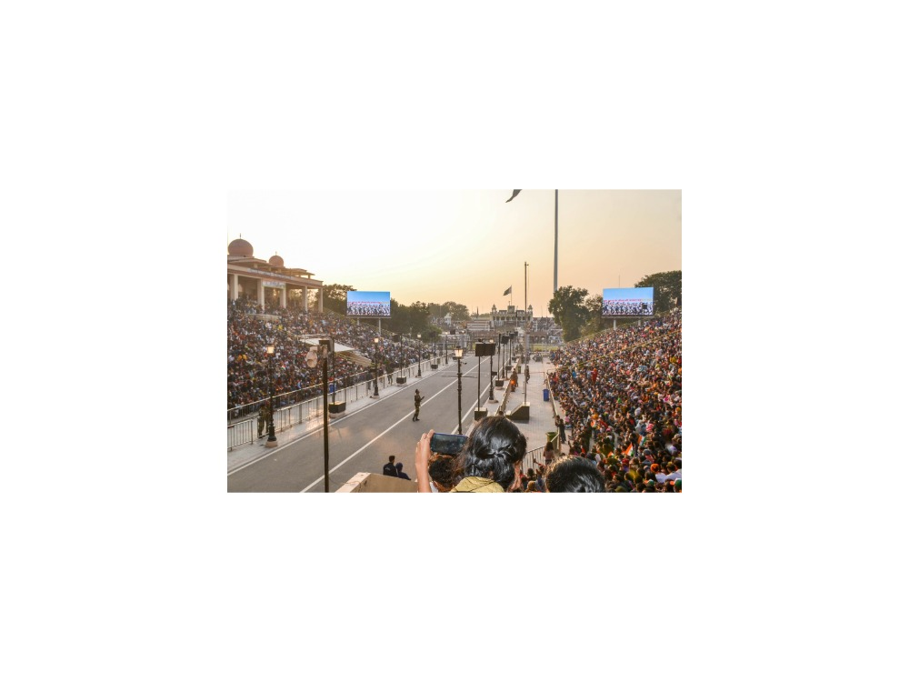
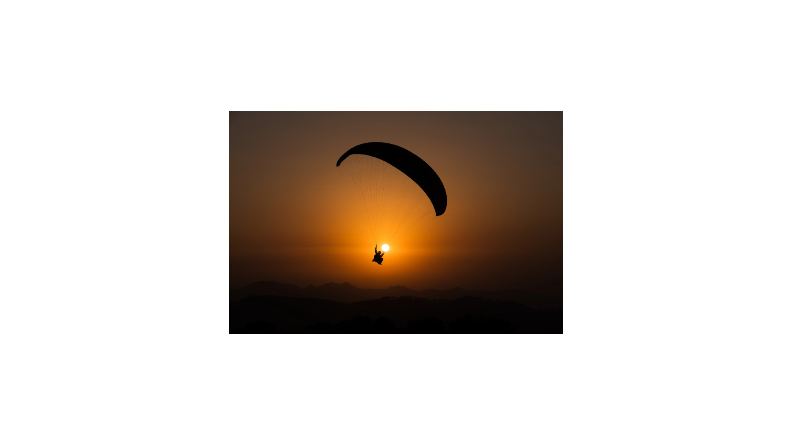

9 дней: гималайская панорама и Золотой храм
Дели · Шимла · Манди · Наггар · Манали · Вашишт · Бир · Дхарамшала · Амритсар
О путешествии
Гималайские городки и монастыри и финал у Золотого храма в Амритсаре — девять дней.
Насыщенные дни с несколькими длинными переездами. Подходит энергичным путешественникам.
Главное
- Молл-роуд и резиденция вице-короля в Шимле
- Замок Наггар и усадьба Рерихов
- Монастыри Мак-Леод Гандж и тибетская культура
- Церемония на границе Вагах и Золотой храм (Харимандир Сахиб) в Амритсаре
Маршрут и программа по дням
Схематичный маршрут, не в масштабе.
Подробная программа по дням пока на английском. Русская версия готовится; полную программу на русском я пришлю по запросу.
День 1Delhi Drive to Shimla
Chauffeured drive from Delhi to Shimla (approx. 7–8 hours). Check in and stroll Mall Road. Overnight in Shimla.
День 2Shimla Colonial Heritage
Tour Vice Regal Lodge, Jakhu Temple, Christ Church, and Gaiety Theatre. Overnight in Shimla.
День 3Scenic Drive to Kullu Valley & Naggar
Drive to Naggar via Mandi (approx. 7–8 hours including stops: Pandoh Dam, Bhootnath Temple). Optional Beas River rafting. Overnight in Naggar.
День 4Naggar Castle & Roerich Art Estate
Tour Naggar Castle, Tripura Sundari Temple, and Roerich Estate. Overnight in Naggar.
День 5Manali Highlights & Paragliding Hub at Bir
Visit Hadimba Temple and Vashisht Hot Springs in Manali. Drive to Bir (approx. 6–7 hours); optional paragliding (seasonal, not included). Overnight in Bir.
День 6Dharamshala & McLeod Ganj
Drive to McLeod Ganj. Visit Dalai Lama Temple complex, Tibetan Refugee Settlement, and St. John in the Wilderness church. Overnight in Dharamshala.
День 7Norbulingka Institute & Tibet Museum
Tour Tibet Museum and Norbulingka Institute of Tibetan Arts. Overnight in Dharamshala.
День 8Drive to Punjab & Wagah Border Ceremony
Drive from Dharamshala to Amritsar (approx. 5 hours). Visit the Attari–Wagah border for the Beating Retreat ceremony (held shortly before sunset; timings change by season and visitors are advised to arrive about two hours early). The ceremony has run in a scaled-down format since May 2025; confirm the current format before travel. Overnight in Amritsar.
День 9Golden Temple, Jallianwala Bagh & Return to Delhi
Morning visit to Sri Harmandir Sahib (Golden Temple) and community langar kitchen. Visit Jallianwala Bagh memorial.
Return to Delhi via flight from Amritsar (ATQ), Shatabdi Express train, or private car (approx. 5.5–7 hours; not included).
Лучшее время для поездки
Лучшее Возможно Нежелательно
Лучшее время: апр–май, сен–окт. Также подходит: мар, июн, ноя.
Апрель — июнь и сентябрь — ноябрь — самые ясные месяцы. Сильные дожди (июль и август) могут вызывать оползни и задержки на горных дорогах, а снег с декабря по февраль может закрывать высокогорные дороги. Узкоколейка обычно ходит круглый год, но оползни в сезон дождей могут прерывать движение.
Что включено
Включено
- Частный автомобиль с кондиционером и водителем
- Лицензированный гид (русский или английский)
- Входные билеты в памятники
- Отели (8 ночей)
Не включено
- Авиабилеты
- Питание, если не указано
- Чаевые и личные расходы
- Туристическая страховка
Ориентировочно; точный состав подтверждается в вашем персональном расчёте.
Полезно знать
- Церемония на границе Вагах (Аттари): с мая 2025 года возобновлена в сокращённом формате (без рукопожатия и открытия ворот); время меняется по сезонам. Уточняйте формат перед поездкой.
- В Золотом храме нужно покрыть голову; Джалианвала-Баг — мемориальное место.
Места этого маршрута
Часть страниц памятников пока на английском языке.
Золотой храм (Харимандир Сахиб) Замок Наггар
Замок Наггар
Усадьба Рерихов в Наггаре Мак-Леод Гандж и комплекс Цуглагханг
Мак-Леод Гандж и комплекс Цуглагханг
Церемония на границе Вагах Церковь Христа в Шимле
Церковь Христа в Шимле Храм Бхутнатх
Храм Бхутнатх
Парапланеризм в Бир-Биллинге Храм Хадимба
Храм Хадимба Горячие источники Вашишт
Горячие источники Вашишт Джалианвала-Баг
Джалианвала-БагВопросы
Это частное путешествие?
Да. Каждое путешествие — только для вас и ваших спутников, с личным гидом, автомобилем и водителем. Никаких групп и сборных туров.
Можно ли изменить маршрут?
Да. Эта программа — отправная точка. Расскажите об интересах, темпе и датах, и я скорректирую маршрут до расчёта стоимости.
На каких языках проводятся туры?
Викрамджит проводит экскурсии на русском и английском.
Насколько тур физически сложный?
Насыщенные дни с несколькими длинными переездами. Подходит энергичным путешественникам. Оценка темпа: быстрый темп.
Как забронировать и когда я узнаю цену?
Отправьте запрос с датами. В течение 24 часов вы получите персональную программу и расчёт стоимости.
Темы
Гималайские путешествия Духовность и многоконфессиональность
Направления
Похожие путешествия
 1 день
1 деньДели за один день: имперская столица и духовное наследие
Старый Дели, могольские мавзолеи и святыни трёх религий — в вашем темпе за один частный день.
Подробнее → 5 дней
5 дней5 дней: Восточные Гималаи — Дарджилинг, Калимпонг и Гангток
Чайные плантации, монастыри и рассвет над Канченджангой в Дарджилинге, Калимпонге и Гангтоке.
Подробнее → 8 дней
8 дней8 дней: гималайская узкоколейка — Шимла, долина Куллу и Мак-Леод Гандж
Узкоколейка ЮНЕСКО, колониальная Шимла, долина Куллу и тибетские холмы Мак-Леод Гандж за восемь дней.
Подробнее →